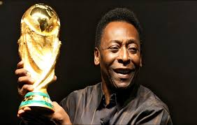

1940-2022
"“Everything is practice."
Edson Arantes do Nascimento, better known by his nickname Pelé, (October 23, 1940 – December 29, 2022) was a Brazilian professional footballer who played as a forward. Regarded as one of the greatest players of all time and labelled "the greatest" by FIFA, he was among the most successful and popular sports figures of the 20th century.